Science Gothic is a 4-axis variable font with a wide design range, allowing it to take on many different looks and uses, from superheroes, action and pulp detectives to business and banking, from science fiction and technology to cosmetics. The basic design is closely modeled on Morris Fuller Benton’s Bank Gothic (1930–34) for American Type Founders. But where Bank Gothic was an all-caps typeface with moderate variation in weight and width, Science Gothic adds a lowercase, true small caps, extensive language coverage (extended Latin and extended Cyrillic), and four design axes: extreme weight and width axes, plus contrast, and slant. Science Gothic is a team effort, by Thomas Phinney, Vassil Kateliev and Brandon Buerkle. Special thanks to Igor Freiberger for his early contributions.
To comment, give feedback or contribute to Science Gothic, visit https:, visit github.com/googlefonts/science-gothic
 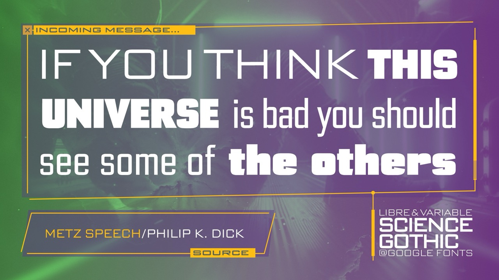
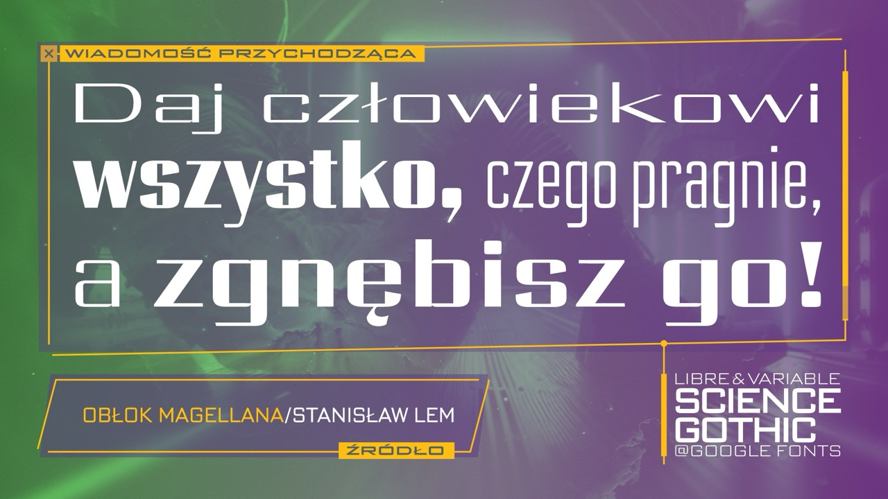
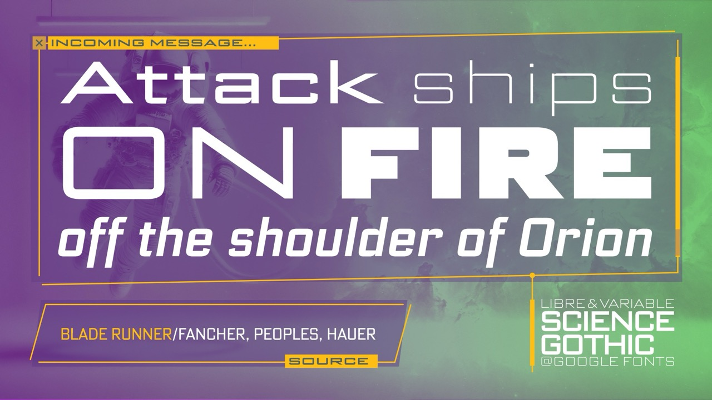
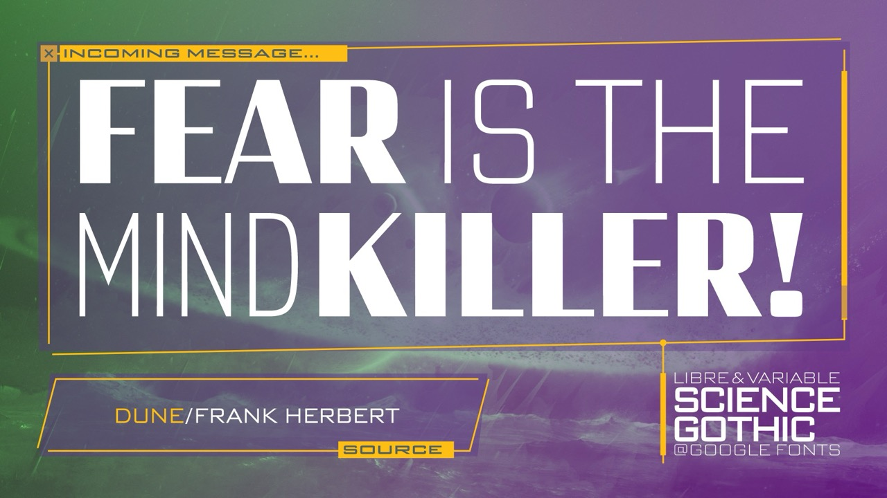
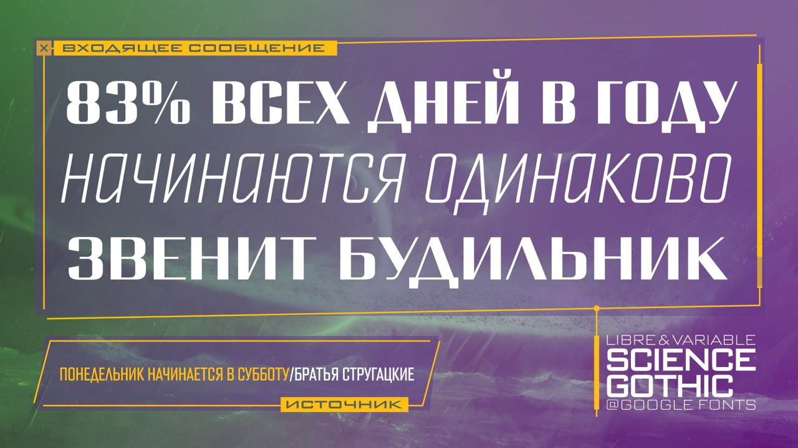
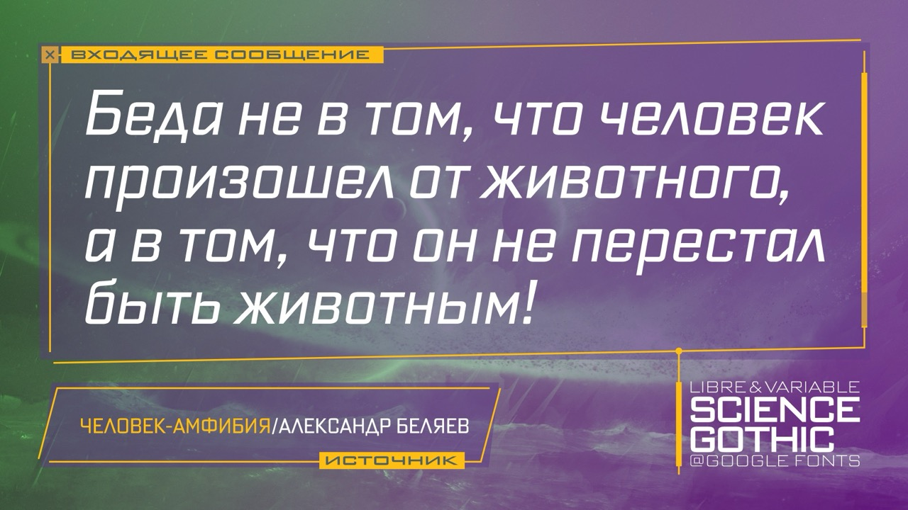
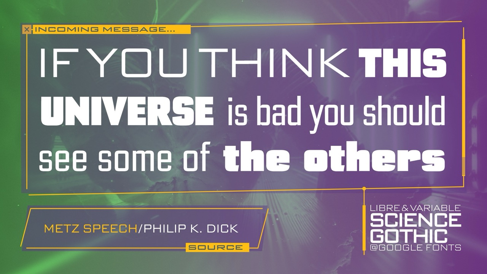
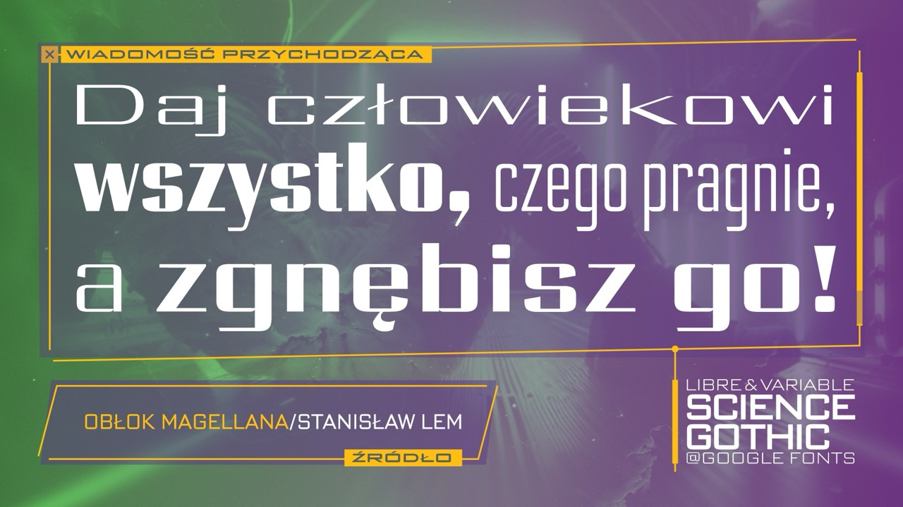
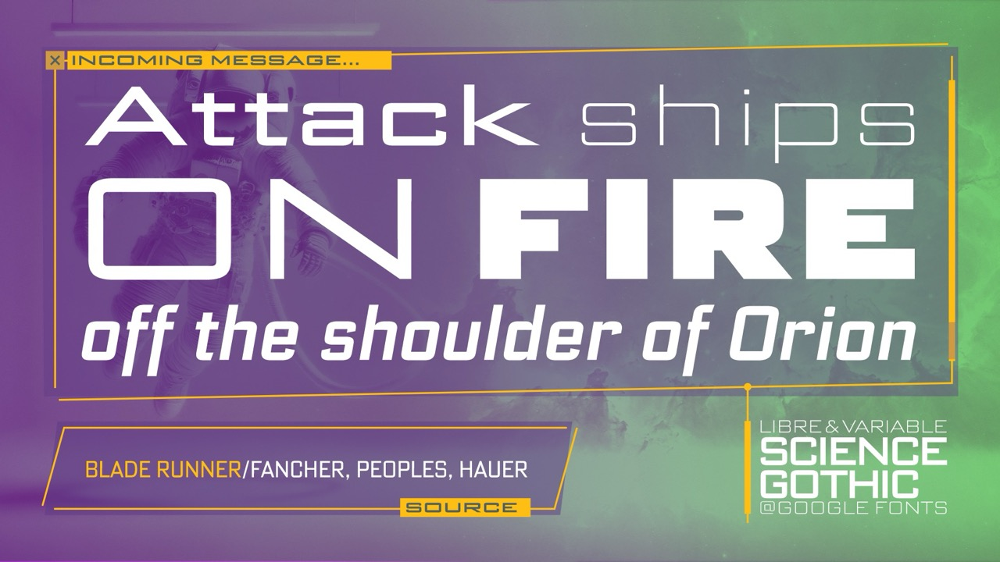
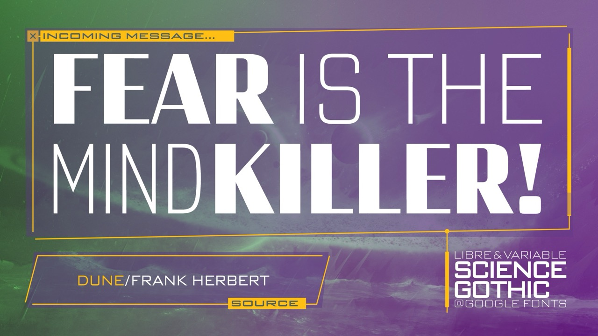
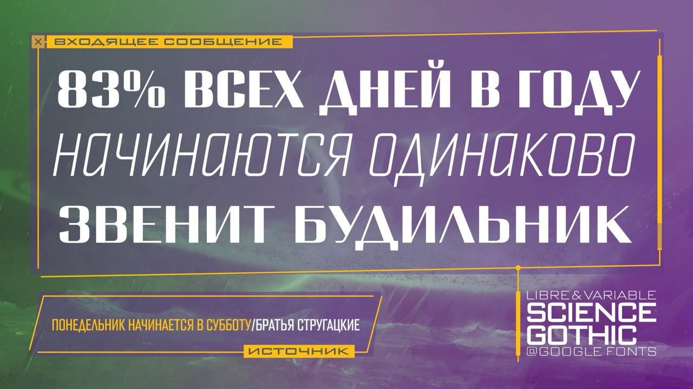
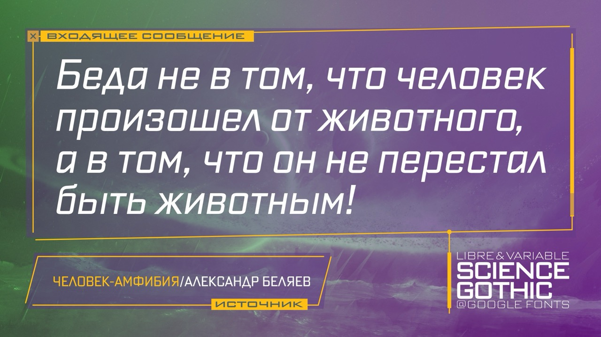